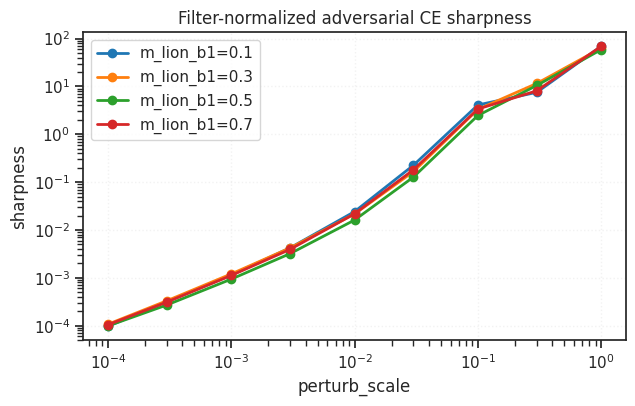
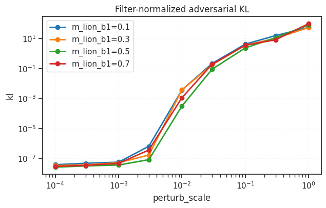
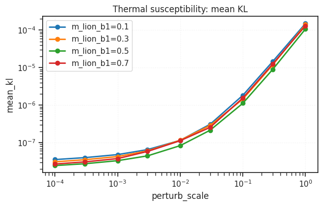
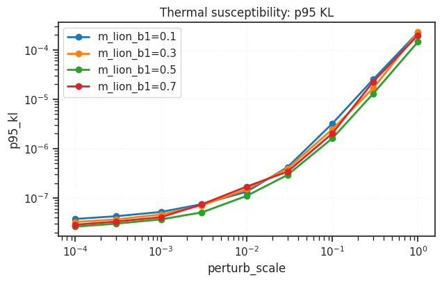
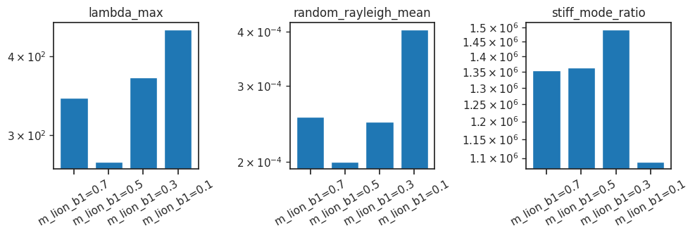

(1) Invariant curvature analysis: MassiveLion vs. Lion#
device = cuda:0
from gra.diagnostics.invariant_curvature_metrics import (
DEFAULT_PERTURB_SCALES,
display_probe_interpretation,
filter_normalized_adversarial_sharpness,
filter_normalized_adversarial_kl,
filter_normalized_thermal_susceptibility,
filter_normalized_fisher_normal_modes,
plot_scale_sweep,
plot_normal_mode_bars,
compare_to_reference,
)
import pandas as pd
from gra.utils.dataset import make_dataloader
device_idx = 0
device = f'cuda:{device_idx}'
print(f"device: {device} ——— host: {os.uname().nodename}")
device: cuda:0 ——— host: chewie
step 0 — load stuff#
load runs#
%%time
from gra.experiments.common.checkpointing import resolve_resume_source, load_checkpoint
run_paths = {
"m_lion_b1=0.7": "pal-lab/GRA-CIFAR10/60u46yf2",
"m_lion_b1=0.5": "pal-lab/GRA-CIFAR10/wldu4pzr",
"m_lion_b1=0.3": "pal-lab/GRA-CIFAR10/i9y0mti2",
"m_lion_b1=0.1": "pal-lab/GRA-CIFAR10/e1tytqhy",
}
sources = {k: resolve_resume_source(v) for k, v in run_paths.items()}
ckpts = {
k: load_checkpoint(src.checkpoint_path, map_location="cpu")
for k, src in sources.items()
}
models = {k: ckpt_to_vision_model(ch) for k, ch in ckpts.items()}
wandb: WARNING The anonymous setting has no effect and will be removed in a future version.
wandb: ERROR Failed to detect the name of this notebook. You can set it manually with the WANDB_NOTEBOOK_NAME environment variable to enable code saving.
wandb: [wandb.Api()] Loaded credentials for https://api.wandb.ai from /home/hadi/.netrc.
CPU times: user 1.32 s, sys: 284 ms, total: 1.6 s
Wall time: 4.65 s
Load data#
train_loader, val_loader = make_dataloader(
dataset="CIFAR10",
batch_size=384,
device=device,
)
loader = val_loader
step 1 — run the big loop#
%%time
shared = {
"device": device,
"max_batches": 20,
"perturb_scales": [1e-4, 3e-4, 1e-3, 3e-3, 1e-2, 3e-2, 1e-1, 3e-1, 1],
}
adv_ce_rows = []
adv_kl_rows = []
thermal_rows = []
normal_mode_rows = []
for label, model in tqdm(models.items()):
for perturb_scale in shared["perturb_scales"]:
out = filter_normalized_adversarial_sharpness(
model,
loader,
device=shared["device"],
perturb_scale=perturb_scale,
ascent_steps=10,
max_batches=shared["max_batches"],
)
adv_ce_rows.append({"label": label, **out})
out = filter_normalized_adversarial_kl(
model,
loader,
device=shared["device"],
perturb_scale=perturb_scale,
ascent_steps=10,
max_batches=shared["max_batches"],
)
adv_kl_rows.append({"label": label, **out})
out = filter_normalized_thermal_susceptibility(
model,
loader,
device=shared["device"],
perturb_scale=perturb_scale,
samples=30,
max_batches=shared["max_batches"],
)
thermal_rows.append({"label": label, **out})
out = filter_normalized_fisher_normal_modes(
model,
loader,
device=shared["device"],
max_batches=10,
lanczos_steps=12,
random_probes=8,
)
normal_mode_rows.append({"label": label, **out})
adv_ce_df = pd.DataFrame(adv_ce_rows)
adv_kl_df = pd.DataFrame(adv_kl_rows)
thermal_df = pd.DataFrame(thermal_rows)
normal_modes_df = pd.DataFrame(normal_mode_rows)
CPU times: user 11min 23s, sys: 7min 29s, total: 18min 52s
Wall time: 17min 56s
step 2 — inspect / visualize#
plots#
plot_scale_sweep(adv_ce_df, "sharpness", title="Filter-normalized adversarial CE sharpness")
plot_scale_sweep(adv_kl_df, "kl", title="Filter-normalized adversarial KL")
plot_scale_sweep(thermal_df, "mean_kl", title="Thermal susceptibility: mean KL")
plot_scale_sweep(thermal_df, "p95_kl", title="Thermal susceptibility: p95 KL")
plot_normal_mode_bars(normal_modes_df);





relative to m_lion#
# Useful ratio tables against MassiveLion.
adv_ce_vs_mlion = compare_to_reference(adv_ce_df, "sharpness", reference_label="m_lion_b1=0.7")
adv_kl_vs_mlion = compare_to_reference(adv_kl_df, "kl", reference_label="m_lion_b1=0.7")
thermal_vs_mlion = compare_to_reference(thermal_df, "mean_kl", reference_label="m_lion_b1=0.7")
display(adv_ce_vs_mlion)
display(adv_kl_vs_mlion)
display(thermal_vs_mlion)
| label | perturb_scale | m_lion_b1=0.1 | m_lion_b1=0.3 | m_lion_b1=0.5 | m_lion_b1=0.7 | m_lion_b1=0.1_over_m_lion_b1=0.7 | m_lion_b1=0.1_minus_m_lion_b1=0.7 | m_lion_b1=0.3_over_m_lion_b1=0.7 | m_lion_b1=0.3_minus_m_lion_b1=0.7 | m_lion_b1=0.5_over_m_lion_b1=0.7 | m_lion_b1=0.5_minus_m_lion_b1=0.7 | m_lion_b1=0.7_over_m_lion_b1=0.7 | m_lion_b1=0.7_minus_m_lion_b1=0.7 |
|---|---|---|---|---|---|---|---|---|---|---|---|---|---|
| 0 | 0.0001 | 0.000097 | 0.000108 | 0.000099 | 0.000105 | 0.929092 | -0.000007 | 1.027206 | 0.000003 | 0.945256 | -0.000006 | 1.0 | 0.0 |
| 1 | 0.0003 | 0.000318 | 0.000332 | 0.000271 | 0.000312 | 1.018364 | 0.000006 | 1.064825 | 0.000020 | 0.868906 | -0.000041 | 1.0 | 0.0 |
| 2 | 0.0010 | 0.001148 | 0.001211 | 0.000941 | 0.001124 | 1.021364 | 0.000024 | 1.077049 | 0.000087 | 0.837470 | -0.000183 | 1.0 | 0.0 |
| 3 | 0.0030 | 0.004246 | 0.004232 | 0.003212 | 0.003944 | 1.076487 | 0.000302 | 1.072805 | 0.000287 | 0.814319 | -0.000732 | 1.0 | 0.0 |
| 4 | 0.0100 | 0.024262 | 0.021681 | 0.016169 | 0.021853 | 1.110231 | 0.002409 | 0.992151 | -0.000172 | 0.739918 | -0.005684 | 1.0 | 0.0 |
| 5 | 0.0300 | 0.225696 | 0.165920 | 0.127768 | 0.181366 | 1.244427 | 0.044331 | 0.914837 | -0.015446 | 0.704479 | -0.053597 | 1.0 | 0.0 |
| 6 | 0.1000 | 4.100413 | 3.321923 | 2.472852 | 3.371351 | 1.216252 | 0.729062 | 0.985339 | -0.049428 | 0.733490 | -0.898499 | 1.0 | 0.0 |
| 7 | 0.3000 | 7.528735 | 11.537738 | 10.465729 | 8.099920 | 0.929483 | -0.571185 | 1.424426 | 3.437818 | 1.292078 | 2.365809 | 1.0 | 0.0 |
| 8 | 1.0000 | 69.002134 | 63.192935 | 58.925291 | 69.028096 | 0.999624 | -0.025962 | 0.915467 | -5.835161 | 0.853642 | -10.102805 | 1.0 | 0.0 |
| label | perturb_scale | m_lion_b1=0.1 | m_lion_b1=0.3 | m_lion_b1=0.5 | m_lion_b1=0.7 | m_lion_b1=0.1_over_m_lion_b1=0.7 | m_lion_b1=0.1_minus_m_lion_b1=0.7 | m_lion_b1=0.3_over_m_lion_b1=0.7 | m_lion_b1=0.3_minus_m_lion_b1=0.7 | m_lion_b1=0.5_over_m_lion_b1=0.7 | m_lion_b1=0.5_minus_m_lion_b1=0.7 | m_lion_b1=0.7_over_m_lion_b1=0.7 | m_lion_b1=0.7_minus_m_lion_b1=0.7 |
|---|---|---|---|---|---|---|---|---|---|---|---|---|---|
| 0 | 0.0001 | 3.787690e-08 | 3.319603e-08 | 2.583648e-08 | 2.901612e-08 | 1.305374 | 8.860783e-09 | 1.144055 | 4.179912e-09 | 0.890418 | -3.179636e-09 | 1.0 | 0.0 |
| 1 | 0.0003 | 4.699761e-08 | 3.667364e-08 | 3.122076e-08 | 3.370916e-08 | 1.394209 | 1.328845e-08 | 1.087943 | 2.964489e-09 | 0.926181 | -2.488393e-09 | 1.0 | 0.0 |
| 2 | 0.0010 | 5.603981e-08 | 5.129916e-08 | 3.589668e-08 | 4.652353e-08 | 1.204548 | 9.516276e-09 | 1.102650 | 4.775629e-09 | 0.771581 | -1.062686e-08 | 1.0 | 0.0 |
| 3 | 0.0030 | 6.412376e-07 | 1.672221e-07 | 8.194963e-08 | 3.599496e-07 | 1.781465 | 2.812880e-07 | 0.464571 | -1.927275e-07 | 0.227670 | -2.779999e-07 | 1.0 | 0.0 |
| 4 | 0.0100 | 3.656943e-03 | 3.760953e-03 | 3.094334e-04 | 1.119362e-03 | 3.266988 | 2.537580e-03 | 3.359907 | 2.641591e-03 | 0.276437 | -8.099289e-04 | 1.0 | 0.0 |
| 5 | 0.0300 | 2.159522e-01 | 1.776410e-01 | 8.963648e-02 | 1.910509e-01 | 1.130339 | 2.490131e-02 | 0.929810 | -1.340989e-02 | 0.469176 | -1.014144e-01 | 1.0 | 0.0 |
| 6 | 0.1000 | 4.223087e+00 | 3.538892e+00 | 2.350057e+00 | 3.585324e+00 | 1.177881 | 6.377625e-01 | 0.987049 | -4.643215e-02 | 0.655466 | -1.235267e+00 | 1.0 | 0.0 |
| 7 | 0.3000 | 1.556812e+01 | 1.031287e+01 | 1.125572e+01 | 8.174856e+00 | 1.904390 | 7.393260e+00 | 1.261535 | 2.138012e+00 | 1.376871 | 3.080867e+00 | 1.0 | 0.0 |
| 8 | 1.0000 | 5.536095e+01 | 5.362243e+01 | 8.039540e+01 | 9.747874e+01 | 0.567928 | -4.211779e+01 | 0.550094 | -4.385631e+01 | 0.824748 | -1.708334e+01 | 1.0 | 0.0 |
| label | perturb_scale | m_lion_b1=0.1 | m_lion_b1=0.3 | m_lion_b1=0.5 | m_lion_b1=0.7 | m_lion_b1=0.1_over_m_lion_b1=0.7 | m_lion_b1=0.1_minus_m_lion_b1=0.7 | m_lion_b1=0.3_over_m_lion_b1=0.7 | m_lion_b1=0.3_minus_m_lion_b1=0.7 | m_lion_b1=0.5_over_m_lion_b1=0.7 | m_lion_b1=0.5_minus_m_lion_b1=0.7 | m_lion_b1=0.7_over_m_lion_b1=0.7 | m_lion_b1=0.7_minus_m_lion_b1=0.7 |
|---|---|---|---|---|---|---|---|---|---|---|---|---|---|
| 0 | 0.0001 | 3.534667e-08 | 3.072212e-08 | 2.448054e-08 | 2.686454e-08 | 1.315737 | 8.482132e-09 | 1.143594 | 3.857583e-09 | 0.911258 | -2.384002e-09 | 1.0 | 0.0 |
| 1 | 0.0003 | 3.982404e-08 | 3.503500e-08 | 2.737756e-08 | 3.065350e-08 | 1.299168 | 9.170535e-09 | 1.142936 | 4.381494e-09 | 0.893130 | -3.275940e-09 | 1.0 | 0.0 |
| 2 | 0.0010 | 4.794374e-08 | 4.255188e-08 | 3.306942e-08 | 3.756002e-08 | 1.276457 | 1.038372e-08 | 1.132904 | 4.991861e-09 | 0.880442 | -4.490602e-09 | 1.0 | 0.0 |
| 3 | 0.0030 | 6.512190e-08 | 6.031296e-08 | 4.434651e-08 | 5.816230e-08 | 1.119658 | 6.959599e-09 | 1.036977 | 2.150660e-09 | 0.762461 | -1.381579e-08 | 1.0 | 0.0 |
| 4 | 0.0100 | 1.151123e-07 | 1.159062e-07 | 8.325856e-08 | 1.127580e-07 | 1.020880 | 2.354348e-09 | 1.027920 | 3.148159e-09 | 0.738383 | -2.949944e-08 | 1.0 | 0.0 |
| 5 | 0.0300 | 3.079073e-07 | 2.875536e-07 | 2.141019e-07 | 2.548305e-07 | 1.208283 | 5.307680e-08 | 1.128411 | 3.272305e-08 | 0.840174 | -4.072858e-08 | 1.0 | 0.0 |
| 6 | 0.1000 | 1.826987e-06 | 1.445393e-06 | 1.121193e-06 | 1.548123e-06 | 1.180130 | 2.788638e-07 | 0.933642 | -1.027307e-07 | 0.724227 | -4.269302e-07 | 1.0 | 0.0 |
| 7 | 0.3000 | 1.454508e-05 | 1.181326e-05 | 8.959567e-06 | 1.248312e-05 | 1.165180 | 2.061960e-06 | 0.946339 | -6.698610e-07 | 0.717734 | -3.523557e-06 | 1.0 | 0.0 |
| 8 | 1.0000 | 1.498181e-04 | 1.413250e-04 | 1.069587e-04 | 1.304222e-04 | 1.148716 | 1.939593e-05 | 1.083596 | 1.090283e-05 | 0.820096 | -2.346342e-05 | 1.0 | 0.0 |
results df#
display(adv_ce_df)
display(adv_kl_df)
display(thermal_df)
display(normal_modes_df)
| label | perturb_scale | base_loss | base_acc | sharp_loss | sharp_acc | sharpness | relative_sharpness | ascent_steps | max_batches | |
|---|---|---|---|---|---|---|---|---|---|---|
| 0 | m_lion_b1=0.7 | 0.0001 | 0.249568 | 0.932813 | 0.249673 | 0.932682 | 0.000105 | 0.000420 | 10 | 20 |
| 1 | m_lion_b1=0.7 | 0.0003 | 0.249568 | 0.932813 | 0.249881 | 0.932682 | 0.000312 | 0.001251 | 10 | 20 |
| 2 | m_lion_b1=0.7 | 0.0010 | 0.249568 | 0.932813 | 0.250693 | 0.932161 | 0.001124 | 0.004504 | 10 | 20 |
| 3 | m_lion_b1=0.7 | 0.0030 | 0.249568 | 0.932813 | 0.253513 | 0.932161 | 0.003944 | 0.015805 | 10 | 20 |
| 4 | m_lion_b1=0.7 | 0.0100 | 0.249568 | 0.932813 | 0.271421 | 0.927083 | 0.021853 | 0.087563 | 10 | 20 |
| 5 | m_lion_b1=0.7 | 0.0300 | 0.249568 | 0.932813 | 0.430934 | 0.888281 | 0.181366 | 0.726717 | 10 | 20 |
| 6 | m_lion_b1=0.7 | 0.1000 | 0.249568 | 0.932813 | 3.620920 | 0.286719 | 3.371351 | 13.508727 | 10 | 20 |
| 7 | m_lion_b1=0.7 | 0.3000 | 0.249568 | 0.932813 | 8.349488 | 0.099740 | 8.099920 | 32.455712 | 10 | 20 |
| 8 | m_lion_b1=0.7 | 1.0000 | 0.249568 | 0.932813 | 69.277665 | 0.103125 | 69.028096 | 276.589901 | 10 | 20 |
| 9 | m_lion_b1=0.5 | 0.0001 | 0.251316 | 0.928516 | 0.251415 | 0.928385 | 0.000099 | 0.000394 | 10 | 20 |
| 10 | m_lion_b1=0.5 | 0.0003 | 0.251316 | 0.928516 | 0.251588 | 0.928776 | 0.000271 | 0.001079 | 10 | 20 |
| 11 | m_lion_b1=0.5 | 0.0010 | 0.251316 | 0.928516 | 0.252258 | 0.929036 | 0.000941 | 0.003746 | 10 | 20 |
| 12 | m_lion_b1=0.5 | 0.0030 | 0.251316 | 0.928516 | 0.254528 | 0.928776 | 0.003212 | 0.012781 | 10 | 20 |
| 13 | m_lion_b1=0.5 | 0.0100 | 0.251316 | 0.928516 | 0.267486 | 0.927214 | 0.016169 | 0.064339 | 10 | 20 |
| 14 | m_lion_b1=0.5 | 0.0300 | 0.251316 | 0.928516 | 0.379085 | 0.901432 | 0.127768 | 0.508396 | 10 | 20 |
| 15 | m_lion_b1=0.5 | 0.1000 | 0.251316 | 0.928516 | 2.724168 | 0.418750 | 2.472852 | 9.839600 | 10 | 20 |
| 16 | m_lion_b1=0.5 | 0.3000 | 0.251316 | 0.928516 | 10.717045 | 0.103125 | 10.465729 | 41.643654 | 10 | 20 |
| 17 | m_lion_b1=0.5 | 1.0000 | 0.251316 | 0.928516 | 59.176608 | 0.103125 | 58.925291 | 234.466653 | 10 | 20 |
| 18 | m_lion_b1=0.3 | 0.0001 | 0.259660 | 0.926562 | 0.259768 | 0.926562 | 0.000108 | 0.000414 | 10 | 20 |
| 19 | m_lion_b1=0.3 | 0.0003 | 0.259660 | 0.926562 | 0.259992 | 0.926302 | 0.000332 | 0.001280 | 10 | 20 |
| 20 | m_lion_b1=0.3 | 0.0010 | 0.259660 | 0.926562 | 0.260871 | 0.926172 | 0.001211 | 0.004663 | 10 | 20 |
| 21 | m_lion_b1=0.3 | 0.0030 | 0.259660 | 0.926562 | 0.263892 | 0.925781 | 0.004232 | 0.016297 | 10 | 20 |
| 22 | m_lion_b1=0.3 | 0.0100 | 0.259660 | 0.926562 | 0.281341 | 0.920833 | 0.021681 | 0.083499 | 10 | 20 |
| 23 | m_lion_b1=0.3 | 0.0300 | 0.259660 | 0.926562 | 0.425580 | 0.885286 | 0.165920 | 0.638989 | 10 | 20 |
| 24 | m_lion_b1=0.3 | 0.1000 | 0.259660 | 0.926562 | 3.581583 | 0.276693 | 3.321923 | 12.793350 | 10 | 20 |
| 25 | m_lion_b1=0.3 | 0.3000 | 0.259660 | 0.926562 | 11.797398 | 0.103125 | 11.537738 | 44.434001 | 10 | 20 |
| 26 | m_lion_b1=0.3 | 1.0000 | 0.259660 | 0.926562 | 63.452595 | 0.103125 | 63.192935 | 243.367891 | 10 | 20 |
| 27 | m_lion_b1=0.1 | 0.0001 | 0.260801 | 0.927995 | 0.260898 | 0.927865 | 0.000097 | 0.000373 | 10 | 20 |
| 28 | m_lion_b1=0.1 | 0.0003 | 0.260801 | 0.927995 | 0.261119 | 0.927214 | 0.000318 | 0.001219 | 10 | 20 |
| 29 | m_lion_b1=0.1 | 0.0010 | 0.260801 | 0.927995 | 0.261949 | 0.927083 | 0.001148 | 0.004402 | 10 | 20 |
| 30 | m_lion_b1=0.1 | 0.0030 | 0.260801 | 0.927995 | 0.265047 | 0.927604 | 0.004246 | 0.016281 | 10 | 20 |
| 31 | m_lion_b1=0.1 | 0.0100 | 0.260801 | 0.927995 | 0.285063 | 0.921875 | 0.024262 | 0.093028 | 10 | 20 |
| 32 | m_lion_b1=0.1 | 0.0300 | 0.260801 | 0.927995 | 0.486497 | 0.871615 | 0.225696 | 0.865396 | 10 | 20 |
| 33 | m_lion_b1=0.1 | 0.1000 | 0.260801 | 0.927995 | 4.361214 | 0.192448 | 4.100413 | 15.722381 | 10 | 20 |
| 34 | m_lion_b1=0.1 | 0.3000 | 0.260801 | 0.927995 | 7.789536 | 0.099219 | 7.528735 | 28.867733 | 10 | 20 |
| 35 | m_lion_b1=0.1 | 1.0000 | 0.260801 | 0.927995 | 69.262935 | 0.103125 | 69.002134 | 264.577690 | 10 | 20 |
| label | perturb_scale | base_loss | base_acc | pert_loss | pert_acc | kl | ascent_steps | max_batches | |
|---|---|---|---|---|---|---|---|---|---|
| 0 | m_lion_b1=0.7 | 0.0001 | 0.249568 | 0.932813 | 0.249572 | 0.932813 | 2.901612e-08 | 10 | 20 |
| 1 | m_lion_b1=0.7 | 0.0003 | 0.249568 | 0.932813 | 0.249567 | 0.932813 | 3.370916e-08 | 10 | 20 |
| 2 | m_lion_b1=0.7 | 0.0010 | 0.249568 | 0.932813 | 0.249570 | 0.932813 | 4.652353e-08 | 10 | 20 |
| 3 | m_lion_b1=0.7 | 0.0030 | 0.249568 | 0.932813 | 0.249593 | 0.932813 | 3.599496e-07 | 10 | 20 |
| 4 | m_lion_b1=0.7 | 0.0100 | 0.249568 | 0.932813 | 0.249261 | 0.933073 | 1.119362e-03 | 10 | 20 |
| 5 | m_lion_b1=0.7 | 0.0300 | 0.249568 | 0.932813 | 0.429645 | 0.889974 | 1.910509e-01 | 10 | 20 |
| 6 | m_lion_b1=0.7 | 0.1000 | 0.249568 | 0.932813 | 3.829309 | 0.254036 | 3.585324e+00 | 10 | 20 |
| 7 | m_lion_b1=0.7 | 0.3000 | 0.249568 | 0.932813 | 8.412753 | 0.099740 | 8.174856e+00 | 10 | 20 |
| 8 | m_lion_b1=0.7 | 1.0000 | 0.249568 | 0.932813 | 97.546361 | 0.101172 | 9.747874e+01 | 10 | 20 |
| 9 | m_lion_b1=0.5 | 0.0001 | 0.251316 | 0.928516 | 0.251321 | 0.928516 | 2.583648e-08 | 10 | 20 |
| 10 | m_lion_b1=0.5 | 0.0003 | 0.251316 | 0.928516 | 0.251318 | 0.928516 | 3.122076e-08 | 10 | 20 |
| 11 | m_lion_b1=0.5 | 0.0010 | 0.251316 | 0.928516 | 0.251317 | 0.928516 | 3.589668e-08 | 10 | 20 |
| 12 | m_lion_b1=0.5 | 0.0030 | 0.251316 | 0.928516 | 0.251316 | 0.928516 | 8.194963e-08 | 10 | 20 |
| 13 | m_lion_b1=0.5 | 0.0100 | 0.251316 | 0.928516 | 0.251197 | 0.928906 | 3.094334e-04 | 10 | 20 |
| 14 | m_lion_b1=0.5 | 0.0300 | 0.251316 | 0.928516 | 0.321611 | 0.914062 | 8.963648e-02 | 10 | 20 |
| 15 | m_lion_b1=0.5 | 0.1000 | 0.251316 | 0.928516 | 2.568560 | 0.445573 | 2.350057e+00 | 10 | 20 |
| 16 | m_lion_b1=0.5 | 0.3000 | 0.251316 | 0.928516 | 11.568047 | 0.103125 | 1.125572e+01 | 10 | 20 |
| 17 | m_lion_b1=0.5 | 1.0000 | 0.251316 | 0.928516 | 80.376218 | 0.101172 | 8.039540e+01 | 10 | 20 |
| 18 | m_lion_b1=0.3 | 0.0001 | 0.259660 | 0.926562 | 0.259653 | 0.926562 | 3.319603e-08 | 10 | 20 |
| 19 | m_lion_b1=0.3 | 0.0003 | 0.259660 | 0.926562 | 0.259658 | 0.926562 | 3.667364e-08 | 10 | 20 |
| 20 | m_lion_b1=0.3 | 0.0010 | 0.259660 | 0.926562 | 0.259651 | 0.926432 | 5.129916e-08 | 10 | 20 |
| 21 | m_lion_b1=0.3 | 0.0030 | 0.259660 | 0.926562 | 0.259640 | 0.926693 | 1.672221e-07 | 10 | 20 |
| 22 | m_lion_b1=0.3 | 0.0100 | 0.259660 | 0.926562 | 0.262689 | 0.927083 | 3.760953e-03 | 10 | 20 |
| 23 | m_lion_b1=0.3 | 0.0300 | 0.259660 | 0.926562 | 0.407005 | 0.888411 | 1.776410e-01 | 10 | 20 |
| 24 | m_lion_b1=0.3 | 0.1000 | 0.259660 | 0.926562 | 3.785065 | 0.244922 | 3.538892e+00 | 10 | 20 |
| 25 | m_lion_b1=0.3 | 0.3000 | 0.259660 | 0.926562 | 10.547955 | 0.099609 | 1.031287e+01 | 10 | 20 |
| 26 | m_lion_b1=0.3 | 1.0000 | 0.259660 | 0.926562 | 53.725985 | 0.099609 | 5.362243e+01 | 10 | 20 |
| 27 | m_lion_b1=0.1 | 0.0001 | 0.260801 | 0.927995 | 0.260803 | 0.927995 | 3.787690e-08 | 10 | 20 |
| 28 | m_lion_b1=0.1 | 0.0003 | 0.260801 | 0.927995 | 0.260799 | 0.927995 | 4.699761e-08 | 10 | 20 |
| 29 | m_lion_b1=0.1 | 0.0010 | 0.260801 | 0.927995 | 0.260799 | 0.927995 | 5.603981e-08 | 10 | 20 |
| 30 | m_lion_b1=0.1 | 0.0030 | 0.260801 | 0.927995 | 0.260805 | 0.927734 | 6.412376e-07 | 10 | 20 |
| 31 | m_lion_b1=0.1 | 0.0100 | 0.260801 | 0.927995 | 0.262753 | 0.926953 | 3.656943e-03 | 10 | 20 |
| 32 | m_lion_b1=0.1 | 0.0300 | 0.260801 | 0.927995 | 0.458048 | 0.878776 | 2.159522e-01 | 10 | 20 |
| 33 | m_lion_b1=0.1 | 0.1000 | 0.260801 | 0.927995 | 4.483814 | 0.167969 | 4.223087e+00 | 10 | 20 |
| 34 | m_lion_b1=0.1 | 0.3000 | 0.260801 | 0.927995 | 15.807709 | 0.101172 | 1.556812e+01 | 10 | 20 |
| 35 | m_lion_b1=0.1 | 1.0000 | 0.260801 | 0.927995 | 55.500047 | 0.099609 | 5.536095e+01 | 10 | 20 |
| label | perturb_scale | base_loss | base_acc | mean_kl | std_kl | p95_kl | mean_loss | mean_loss_increase | p95_loss_increase | mean_acc | worst_acc | samples | max_batches | |
|---|---|---|---|---|---|---|---|---|---|---|---|---|---|---|
| 0 | m_lion_b1=0.7 | 0.0001 | 0.249568 | 0.932813 | 2.686454e-08 | 1.321493e-09 | 2.859834e-08 | 0.249568 | -3.178914e-08 | 3.335873e-06 | 0.932812 | 0.932813 | 30 | 20 |
| 1 | m_lion_b1=0.7 | 0.0003 | 0.249568 | 0.932813 | 3.065350e-08 | 1.722555e-09 | 3.312516e-08 | 0.249568 | 7.251898e-08 | 2.963344e-06 | 0.932812 | 0.932813 | 30 | 20 |
| 2 | m_lion_b1=0.7 | 0.0010 | 0.249568 | 0.932813 | 3.756002e-08 | 2.241892e-09 | 4.061257e-08 | 0.249569 | 7.877747e-07 | 5.466739e-06 | 0.932812 | 0.932813 | 30 | 20 |
| 3 | m_lion_b1=0.7 | 0.0030 | 0.249568 | 0.932813 | 5.816230e-08 | 7.770590e-09 | 7.394442e-08 | 0.249571 | 2.441804e-06 | 7.970134e-06 | 0.932812 | 0.932813 | 30 | 20 |
| 4 | m_lion_b1=0.7 | 0.0100 | 0.249568 | 0.932813 | 1.127580e-07 | 2.789042e-08 | 1.695821e-07 | 0.249574 | 5.258123e-06 | 1.331965e-05 | 0.932812 | 0.932813 | 30 | 20 |
| 5 | m_lion_b1=0.7 | 0.0300 | 0.249568 | 0.932813 | 2.548305e-07 | 4.776838e-08 | 3.405657e-07 | 0.249577 | 8.342663e-06 | 2.777378e-05 | 0.932786 | 0.932682 | 30 | 20 |
| 6 | m_lion_b1=0.7 | 0.1000 | 0.249568 | 0.932813 | 1.548123e-06 | 6.309508e-07 | 2.024522e-06 | 0.249584 | 1.582305e-05 | 7.416109e-05 | 0.932760 | 0.932682 | 30 | 20 |
| 7 | m_lion_b1=0.7 | 0.3000 | 0.249568 | 0.932813 | 1.248312e-05 | 4.985669e-06 | 2.261342e-05 | 0.249574 | 5.407135e-06 | 1.808534e-04 | 0.932787 | 0.932552 | 30 | 20 |
| 8 | m_lion_b1=0.7 | 1.0000 | 0.249568 | 0.932813 | 1.304222e-04 | 3.855836e-05 | 1.985829e-04 | 0.249736 | 1.674722e-04 | 7.096062e-04 | 0.932504 | 0.931641 | 30 | 20 |
| 9 | m_lion_b1=0.5 | 0.0001 | 0.251316 | 0.928516 | 2.448054e-08 | 1.171772e-09 | 2.615547e-08 | 0.251319 | 2.633532e-06 | 5.375346e-06 | 0.928516 | 0.928516 | 30 | 20 |
| 10 | m_lion_b1=0.5 | 0.0003 | 0.251316 | 0.928516 | 2.737756e-08 | 1.383700e-09 | 3.007786e-08 | 0.251319 | 2.961357e-06 | 7.789334e-06 | 0.928516 | 0.928516 | 30 | 20 |
| 11 | m_lion_b1=0.5 | 0.0010 | 0.251316 | 0.928516 | 3.306942e-08 | 1.822697e-09 | 3.668424e-08 | 0.251319 | 2.603730e-06 | 7.252892e-06 | 0.928516 | 0.928516 | 30 | 20 |
| 12 | m_lion_b1=0.5 | 0.0030 | 0.251316 | 0.928516 | 4.434651e-08 | 3.159794e-09 | 5.081418e-08 | 0.251319 | 2.216299e-06 | 6.925066e-06 | 0.928516 | 0.928516 | 30 | 20 |
| 13 | m_lion_b1=0.5 | 0.0100 | 0.251316 | 0.928516 | 8.325856e-08 | 1.364431e-08 | 1.096856e-07 | 0.251317 | 9.347995e-07 | 1.211067e-05 | 0.928516 | 0.928516 | 30 | 20 |
| 14 | m_lion_b1=0.5 | 0.0300 | 0.251316 | 0.928516 | 2.141019e-07 | 5.621141e-08 | 2.921532e-07 | 0.251316 | -6.447236e-07 | 1.827975e-05 | 0.928516 | 0.928516 | 30 | 20 |
| 15 | m_lion_b1=0.5 | 0.1000 | 0.251316 | 0.928516 | 1.121193e-06 | 2.931219e-07 | 1.607758e-06 | 0.251310 | -6.098549e-06 | 3.857513e-05 | 0.928594 | 0.928385 | 30 | 20 |
| 16 | m_lion_b1=0.5 | 0.3000 | 0.251316 | 0.928516 | 8.959567e-06 | 2.088703e-06 | 1.296796e-05 | 0.251333 | 1.667043e-05 | 1.246740e-04 | 0.928646 | 0.927995 | 30 | 20 |
| 17 | m_lion_b1=0.5 | 1.0000 | 0.251316 | 0.928516 | 1.069587e-04 | 2.960334e-05 | 1.457642e-04 | 0.251395 | 7.910629e-05 | 4.294624e-04 | 0.928802 | 0.928255 | 30 | 20 |
| 18 | m_lion_b1=0.3 | 0.0001 | 0.259660 | 0.926562 | 3.072212e-08 | 1.211092e-09 | 3.251698e-08 | 0.259657 | -3.329913e-06 | 5.741914e-07 | 0.926502 | 0.926432 | 30 | 20 |
| 19 | m_lion_b1=0.3 | 0.0003 | 0.259660 | 0.926562 | 3.503500e-08 | 1.365380e-09 | 3.657862e-08 | 0.259656 | -3.747145e-06 | -2.900759e-07 | 0.926519 | 0.926432 | 30 | 20 |
| 20 | m_lion_b1=0.3 | 0.0010 | 0.259660 | 0.926562 | 4.255188e-08 | 2.297060e-09 | 4.615672e-08 | 0.259655 | -5.386273e-06 | -1.333157e-06 | 0.926541 | 0.926432 | 30 | 20 |
| 21 | m_lion_b1=0.3 | 0.0030 | 0.259660 | 0.926562 | 6.031296e-08 | 5.595962e-09 | 7.049348e-08 | 0.259657 | -2.942483e-06 | 3.077586e-06 | 0.926550 | 0.926432 | 30 | 20 |
| 22 | m_lion_b1=0.3 | 0.0100 | 0.259660 | 0.926562 | 1.159062e-07 | 1.518770e-08 | 1.494340e-07 | 0.259653 | -6.816785e-06 | 4.537900e-06 | 0.926619 | 0.926432 | 30 | 20 |
| 23 | m_lion_b1=0.3 | 0.0300 | 0.259660 | 0.926562 | 2.875536e-07 | 6.376058e-08 | 3.917404e-07 | 0.259657 | -3.270308e-06 | 1.976689e-05 | 0.926645 | 0.926432 | 30 | 20 |
| 24 | m_lion_b1=0.3 | 0.1000 | 0.259660 | 0.926562 | 1.445393e-06 | 5.159721e-07 | 2.461701e-06 | 0.259646 | -1.456539e-05 | 3.550251e-05 | 0.926606 | 0.926432 | 30 | 20 |
| 25 | m_lion_b1=0.3 | 0.3000 | 0.259660 | 0.926562 | 1.181326e-05 | 2.934978e-06 | 1.675801e-05 | 0.259619 | -4.156629e-05 | 9.337862e-05 | 0.926536 | 0.926172 | 30 | 20 |
| 26 | m_lion_b1=0.3 | 1.0000 | 0.259660 | 0.926562 | 1.413250e-04 | 4.043327e-05 | 2.279401e-04 | 0.259709 | 4.918178e-05 | 4.925509e-04 | 0.926649 | 0.925651 | 30 | 20 |
| 27 | m_lion_b1=0.1 | 0.0001 | 0.260801 | 0.927995 | 3.534667e-08 | 1.344405e-09 | 3.742403e-08 | 0.260797 | -3.560384e-06 | 1.351039e-07 | 0.927995 | 0.927995 | 30 | 20 |
| 28 | m_lion_b1=0.1 | 0.0003 | 0.260801 | 0.927995 | 3.982404e-08 | 1.611828e-09 | 4.252954e-08 | 0.260799 | -2.249082e-06 | 1.535813e-06 | 0.927995 | 0.927995 | 30 | 20 |
| 29 | m_lion_b1=0.1 | 0.0010 | 0.260801 | 0.927995 | 4.794374e-08 | 2.241148e-09 | 5.193177e-08 | 0.260796 | -4.782279e-06 | 5.523364e-07 | 0.927995 | 0.927995 | 30 | 20 |
| 30 | m_lion_b1=0.1 | 0.0030 | 0.260801 | 0.927995 | 6.512190e-08 | 5.404113e-09 | 7.462027e-08 | 0.260796 | -5.318721e-06 | 6.715457e-07 | 0.927995 | 0.927995 | 30 | 20 |
| 31 | m_lion_b1=0.1 | 0.0100 | 0.260801 | 0.927995 | 1.151123e-07 | 1.280975e-08 | 1.331631e-07 | 0.260797 | -4.216035e-06 | 7.228057e-06 | 0.927977 | 0.927865 | 30 | 20 |
| 32 | m_lion_b1=0.1 | 0.0300 | 0.260801 | 0.927995 | 3.079073e-07 | 6.714883e-08 | 4.198074e-07 | 0.260788 | -1.265009e-05 | 7.615487e-06 | 0.927943 | 0.927865 | 30 | 20 |
| 33 | m_lion_b1=0.1 | 0.1000 | 0.260801 | 0.927995 | 1.826987e-06 | 6.362702e-07 | 3.208073e-06 | 0.260794 | -6.600221e-06 | 3.780524e-05 | 0.927891 | 0.927604 | 30 | 20 |
| 34 | m_lion_b1=0.1 | 0.3000 | 0.260801 | 0.927995 | 1.454508e-05 | 5.862944e-06 | 2.521718e-05 | 0.260798 | -3.262361e-06 | 1.397590e-04 | 0.927687 | 0.927214 | 30 | 20 |
| 35 | m_lion_b1=0.1 | 1.0000 | 0.260801 | 0.927995 | 1.498181e-04 | 4.937789e-05 | 2.254922e-04 | 0.260954 | 1.527230e-04 | 5.886714e-04 | 0.927274 | 0.926432 | 30 | 20 |
| label | base_loss | base_acc | n_examples | n_params | lambda_max | top_eigs | random_rayleigh_mean | random_rayleigh_std | stiff_mode_ratio | ... | random_probes | max_batches | top_eig_1 | top_eig_2 | top_eig_3 | top_eig_4 | top_eig_5 | top_eig_6 | top_eig_7 | top_eig_8 | |
|---|---|---|---|---|---|---|---|---|---|---|---|---|---|---|---|---|---|---|---|---|---|
| 0 | m_lion_b1=0.7 | 0.245112 | 0.936458 | 3840 | 11173962 | 343.906952 | [343.9069519042969, 304.0756530761719, 270.462... | 0.000254 | 0.000077 | 1.355215e+06 | ... | 8 | 10 | 343.906952 | 304.075653 | 270.462769 | 233.595474 | 200.121933 | 155.476868 | 131.597076 | 85.869461 |
| 1 | m_lion_b1=0.5 | 0.254487 | 0.925521 | 3840 | 11173962 | 272.311340 | [272.31134033203125, 214.89698791503906, 193.7... | 0.000200 | 0.000073 | 1.363017e+06 | ... | 8 | 10 | 272.311340 | 214.896988 | 193.759109 | 154.994766 | 133.636795 | 116.308167 | 95.587830 | 74.815178 |
| 2 | m_lion_b1=0.3 | 0.264014 | 0.922917 | 3840 | 11173962 | 369.979950 | [369.9799499511719, 304.2317810058594, 253.367... | 0.000248 | 0.000071 | 1.493343e+06 | ... | 8 | 10 | 369.979950 | 304.231781 | 253.367355 | 246.701675 | 173.035141 | 141.682922 | 97.716682 | 86.584091 |
| 3 | m_lion_b1=0.1 | 0.269664 | 0.926302 | 3840 | 11173962 | 440.943726 | [440.9437255859375, 393.0061340332031, 324.299... | 0.000405 | 0.000166 | 1.089357e+06 | ... | 8 | 10 | 440.943726 | 393.006134 | 324.299835 | 315.772217 | 243.612930 | 196.119095 | 162.395004 | 101.557968 |
4 rows × 21 columns